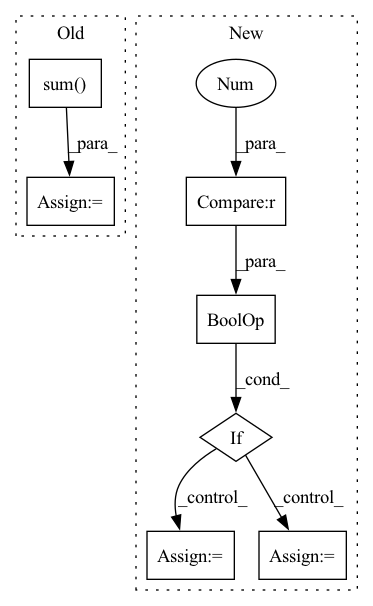

Pattern ID :24580

Before Change
interest_vectors = self.interest_extractor(history, lengths) // bsz, K, emb
i_vectors = self.interest_extractor.i_embeddings(i_ids)
target_vector = i_vectors[:, 0] // bsz, emb
target_intent = (interest_vectors * target_vector[:, None, :]).sum(-1) // bsz, K
his_vector = self.intent_predictor(history, lengths) // bsz, K
pred_intent = self.proj(his_vector) // bsz, K
user_vector = (interest_vectors * pred_intent.softmax(-1)[:, :, None]).sum(-2) // bsz, emb
After Change
out_dict["prediction"] = prediction.view(batch_size, -1)
// For JS divergence analysis
if self.stage != 2 and feed_dict["phase"] == "test":
target_vector = i_vectors[:, 0] // bsz, emb
target_intent = self.similarity(interest_vectors, target_vector.unsqueeze(1)) // bsz, K
idx = torch.from_numpy(np.arange(batch_size)).to(self.device)
rec_vector = i_vectors[idx, prediction.max(-1)[1]]
rec_intent = self.similarity(interest_vectors, rec_vector.unsqueeze(1)) // bsz, K
out_dict["js"] = self.js_div(target_intent, rec_intent).sum(-1)
In pattern: SUPERPATTERN
Frequency: 3
Non-data size: 7
Instances
Fragment ID: 76302477
Project Name: thuwangcy/rechorus
Commit Name: 65a5eeb4ab208d93c3b4817469809eb715f1b374
Time: 2021-12-07
Author: THUwangcy@gmail.com
File Name: src/models/developing/TiMiRecLight.py
M Class Name: TiMiRecLight
N Class Name: TiMiRecLight
M Method Name: forward(2)
N Method Name: forward(2)
M Parent Class: SequentialModel
N Parent Class: SequentialModel
M File Name: src/models/developing/TiMiRecLight.py
N File Name: src/models/developing/TiMiRecLight.py
M Start Line: 113
M End Line: 122
N Start Line: 128
N End Line: 155
'>
Before Change
logits = _dict["logits"]
vloss1 = tinners[:, neuron].sum()
vloss2 = tinners.sum() - vloss1
tvloss = total_variation(mark)
mask_loss = mask.sum()
After Change
if use_mask:
mask_loss = mask.sum()
mask_nz = len(mask.nonzero())
if (self.count_mask and mask_nz > (math.sqrt(self.max_troj_size) + 2)**2) \
or (not self.count_mask and mask_loss > 100):
mask_loss *= 2 * self.remask_weight
elif (self.count_mask and mask_nz > self.max_troj_size) \
or (not self.count_mask and mask_loss > self.max_troj_size):
mask_loss *= self.remask_weight
else:
mask_loss = 0.0
loss = -vloss1 + 1e-4 * vloss2 + mask_loss
'>
Fragment ID: 76302463
Project Name: ain-soph/trojanzoo
Commit Name: 1684c28ef38502abb83d37beb845b69007e33274
Time: 2020-07-07
Author: ain-soph@live.com
File Name: trojanzoo/defense/backdoor/abs.py
M Class Name: ABS
N Class Name: ABS
M Method Name: abs_loss(7)
N Method Name: abs_loss(7)
M Parent Class: Defense_Backdoor
N Parent Class: Defense_Backdoor
M File Name: trojanzoo/defense/backdoor/abs.py
N File Name: trojanzoo/defense/backdoor/abs.py
M Start Line: 231
M End Line: 252
N Start Line: 260
N End Line: 283
'>
Before Change
self.knn_t,
)
num = images.size()
top1 = (pred_labels[:, 0] == targets).float().sum()
return (num, top1)
def validation_epoch_end(self, outputs):
device = self.dummy_param.device
After Change
self.knn_k,
self.knn_t,
)
if dist.is_initialized() and dist.get_world_size() > 0:
// gather predictions and targets from all processes
predicted_labels = torch.cat(dist.gather(predicted_labels), 0)
targets = torch.cat(dist.gather(targets), 0)
self._val_predicted_labels.append(predicted_labels.cpu())
self._val_targets.append(targets.cpu())
'>
Fragment ID: 76302481
Project Name: lightly-ai/lightly
Commit Name: 000ebaa81361959c8cf9e4075f5c3e393df41a93
Time: 2023-04-12
Author: 43336610+guarin@users.noreply.github.com
File Name: lightly/utils/benchmarking.py
M Class Name: BenchmarkModule
N Class Name: BenchmarkModule
M Method Name: validation_step(3)
N Method Name: validation_step(3)
M Parent Class: LightningModule
N Parent Class: LightningModule
M File Name: lightly/utils/benchmarking.py
N File Name: lightly/utils/benchmarking.py
M Start Line: 197
M End Line: 211
N Start Line: 203
N End Line: 221